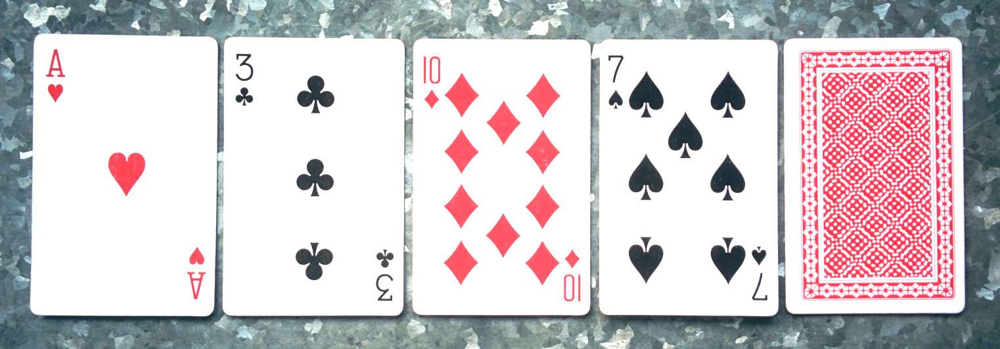

ICPC World Finals 2021 · Problem E
There is a fairly well-known mentalism trick known as the Fitch Cheney trick. From a deck of n playing cards, k are selected uniformly at random and given to an assistant while the magician is out of the room. The assistant places k − 1 of the selected cards on a table, face up, and the single remaining card face down. The cards are placed in a single row with the face-down card at the end (see the picture for an example). The magician enters the room, looks at the cards on the table, and announces what the kth card is, although its face is hidden. The trick is typically done with n = 52 and k = 5.

The assistant uses two ways of passing information to the magician. First, they can pick which one of the k cards to keep hidden. Second, they can rearrange the other k − 1 cards in a specific way. For the case n = 52 and k = 5 both techniques are needed, since there are only 24 ways of rearranging four cards, which is not enough to reliably signal the fifth card. It is an interesting exercise to come up with a simple, easy-to-remember strategy for executing this trick, but right now you have another concern.
You were planning to perform this trick today, but just now you have learned that the deck has more cards than you expected. The trick may be impossible! In desperation, you have decided to cheat a little. You have m distinguishable ways of marking the backs of the playing cards. You have marked the backs of all n cards, allowing you to narrow down the possibilities for the kth card. For example, if there are 6 cards marked with a particular method, and you see that the back of the kth card is marked with that method, you know it must be one of those 6 cards.
Determine the probability that you will successfully guess the kth card, assuming you and the assistant execute an optimal (but likely very complicated!) strategy.
The input contains one line with several integers. The first integer gives k (2 ≤ k ≤ 10), the number of cards that will be selected. The second integer gives m (1 ≤ m ≤ 10), the number of ways of marking the cards. The line is completed by m positive integers, giving the number of cards marked with each distinct method. The sum of these m integers is n (k ≤ n ≤ 109), which is the size of the deck.
Output the highest possible probability of guessing the kth card correctly, accurate up to an absolute error of 10−9.
4 1 28
0.96
3 3 5 12 3
0.854385964912